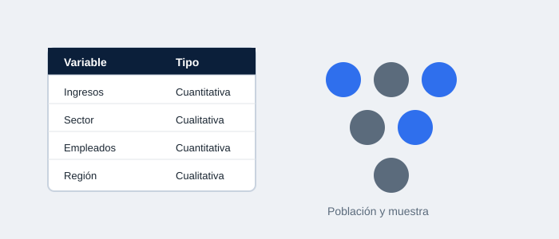

Descripción
En este tema se introducen los conceptos fundamentales de la estadística aplicada a los negocios: población, muestra, variable, tipos de datos (cualitativos y cuantitativos), y las ramas de la estadística (descriptiva e inferencial). Se trabajó la Práctica 1, donde se identificaron y clasificaron variables estadísticas en contextos empresariales reales.
Documentos de la práctica
Los documentos completos (prácticas, ejercicios y datos) están disponibles en Google Drive: